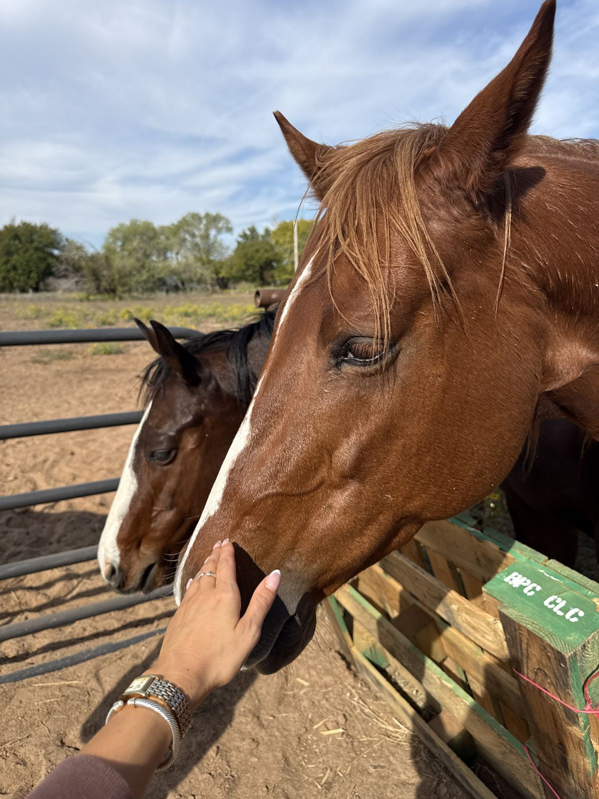

Home › Volunteer
VolunteerHands on. Horses first.
Feeding, grooming, mucking, barn days. Tell us when you're free and the ranch will be in touch.

Tell us about you
A day at the barn
- 1
Feed and water
Morning and evening. Hay out, buckets filled, supplements measured by the labels on the jugs.
- 2
Grooming and groundwork
Brushing, picking feet, leading. This is where a shy horse learns people are all right.
- 3
Barn days
Mucking, fence repair, hay stacking, tack cleaning. Bring gloves.
- 4
Events and camps
Extra hands for pony parties, camps and open days.
Volunteering, answered
Do I need horse experience?
No. Feeding, filling water, mucking and barn days need willing hands, not experience. Anyone working directly with a horse is shown how first.
How old do volunteers have to be?
The ranch's minimum age and the rule for under-18s with a parent will be stated here.
When are volunteer days?
Regular days and times will be listed here once the ranch sets them. Tell us when you're free in the form and we'll match you to one.
Can a group or a class come out?
Yes. Call (405) 922-0839 and we'll plan a barn day around your group.
Give once, or a little every month
Every gift goes to hay, feed and care, and you'll hear back about the horse it helped.